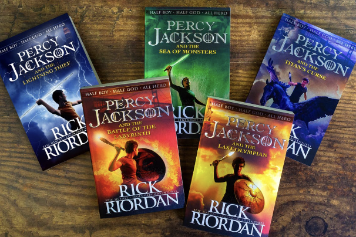
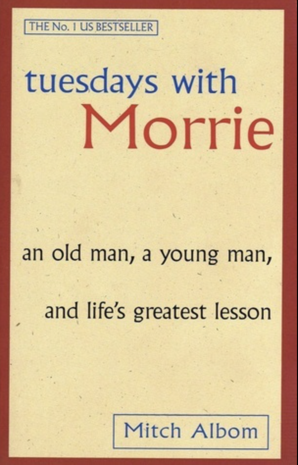
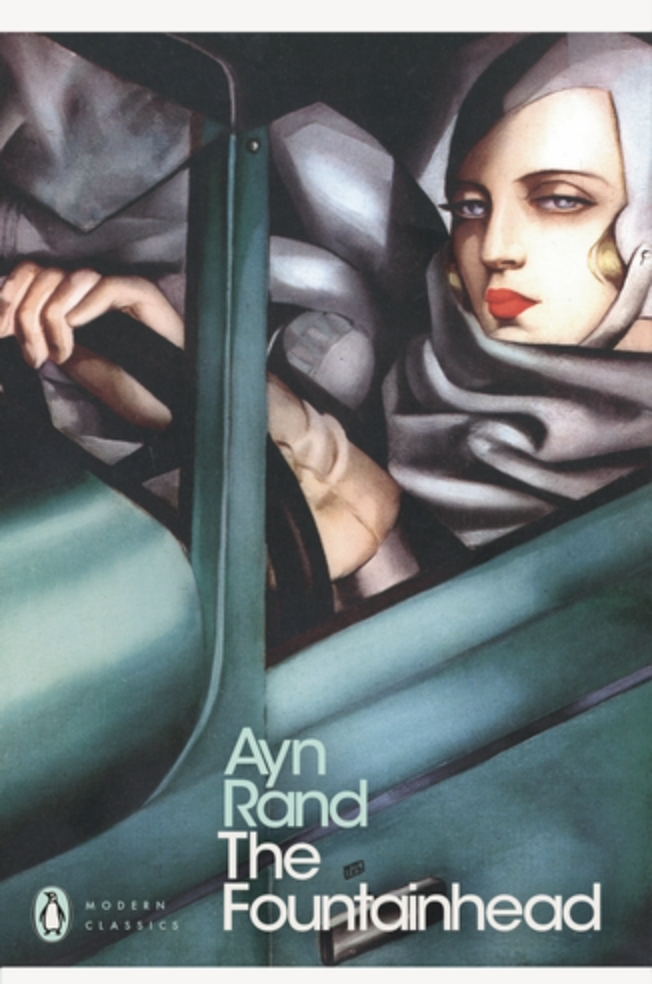
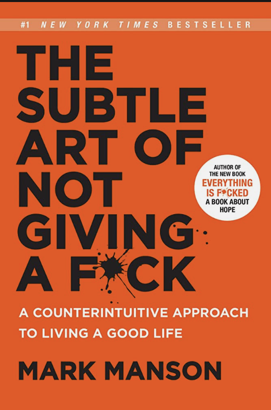

I like my Bagels and Lox on an everything bagel, with plain cream cheese, Lox and topped with capers. I do not like red onion or scallions on my Bagels and Lox.
I like my Bagels and Lox on an everything bagel, with plain cream cheese, Lox and topped with capers. I do not like red onion or scallions on my Bagels and Lox. I am currently pursuing a masters in Human Factors Engineering and a certification in Computer Science. I have industry experience creating digital products as a Product Designer. I typically create websites through platforms like Figma, Squarespace, Wix, and Wordpress, but would like to become profecient in HTML/CSS. I took this class as I am interested in learning more about web development; not just the programming languages but also the technicalities involved with how the web works.
I like my Bagels and Lox on an everything bagel, with plain cream cheese, Lox and topped with capers. I do not like red onion or scallions on my Bagels and Lox.
| Book Name | Cover Image | Author | Summary |
|---|---|---|---|
| Percy Jackson & the Olympians |  | Rick Riordan | This is a series of five fantasy novels which paints the adventures of Percy Jackson, who must travel across the nation to find who stole Zeus' master bolt -- the original weapon of mass destruction. Through this adventure, he fights mythological enemies, faces his absent father and must decipher a terrifying oracle. |
| Tuesdays with Morrie |  | Mitch Albom | This book highlights a series of visits Mitch Albom makes to his former sociology professor, Morrie Schwartz, who is dying from ALS. Not only does this book teach a lot about losing people to death, but it also talks about the importance of love, companionship and friendship in life. |
| The Fountainhead |  | Ayn Rand | The Fountainhead is a novel about a young architect, named Howard Roark, who battles against conventional standards and refuses to compromise with establishments that do not accept innovation. Roark's character embodies Rand's belief that individualism is superior to collectivism. Rand values independence and integrity over conformity. |
| The Subtle Art of Not Giving a F*** |  | Mark Manson | Among the many self help books in the market, this one has been the only effective one to me. It advises us to turn down toxic positivity and to embrace reality. Manson believes that the key to a better life is not dependent on our ability to turn lemons into lemonade but on learning how to stomach lemons better. |